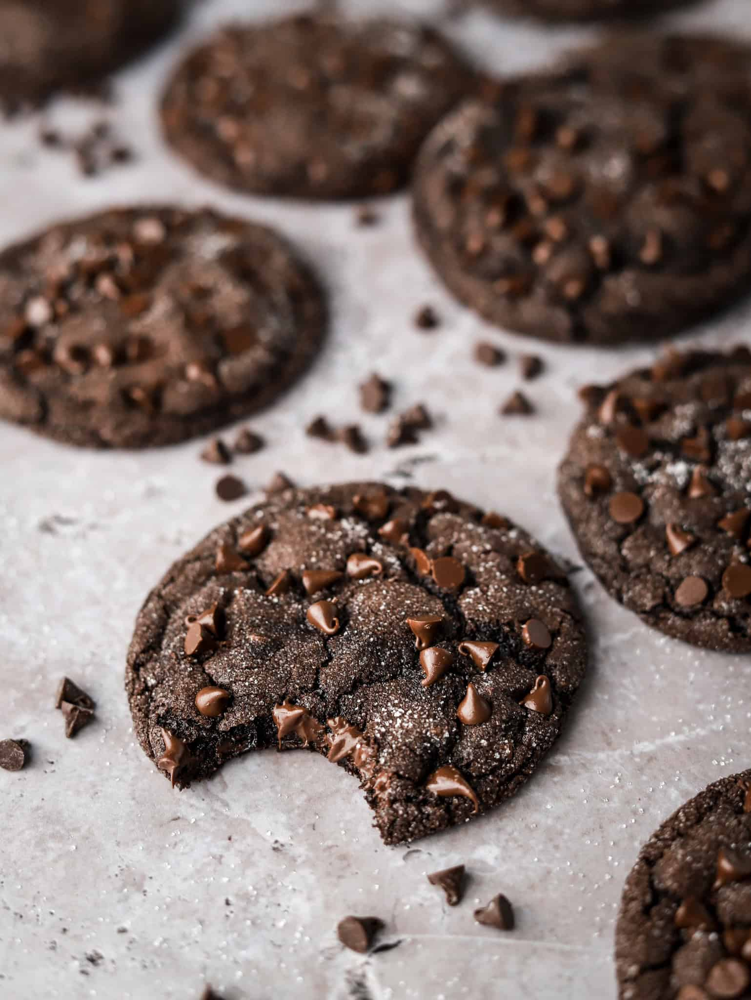

Doulbe Fudge Cookies

Fudgy Double Chocolate Cookies with a brownie-like base and mini semi-sweet chocolate chips – the ultimate chocolate cookie! These cookies take 1 hour and 50 minutes to make and can serve 12. Have fun baking!!
Equipment
Ingredients
- 1 cup semi-sweet chocolate chips (regular or mini)
- 1/3 cup plant-based butter (or regular butter)
- 3/4 cup white granulated sugar
- 2 large eggs
- 1 teaspoon vanilla extract
- 1/2 cup Dutched cocoa powder
- 3/4 cup + 2 Tbsp all-purpose flour
- 1 tsp baking soda
- 1/2 tsp salt
- 1/2 cup mini semi-sweet chocolate chips
Ingredients for topping
- 1/2 cup mini semi-sweet chocolate chips
- 1/4 cup white granulated sugar
Instructions
- In a small, microwaveable bowl, add 1 cup of chocolate chips and the butter. Heat in 15-30 second intervals, stirring between each, until the chocolate is melted; set aside.
- In a large bowl, whisk together the 3/4 cup of sugar, eggs, and vanilla extract. Whisk in the melted chocolate.
- Sift in the cocoa powder, and then the flour. Add the baking soda and salt. Use a large spoon or spatula to mix the dough together (it will resemble a thick brownie batter).
- Stir in 1/2 cup of mini chocolate chips. Cover and chill the dough for 1 hour. This step is mandatory as it firms up the dough to allow you to roll the dough balls.
- Once the dough has chilled for just an hour (it should be firm enough to roll but soft enough to scoop), preheat your oven to 350°F and line a baking sheet with parchment paper.
- Add the remaining 1/4 cup of sugar to a small bowl and the remaining 1/2 cup of mini chocolate chips to a small bowl.
- Scoop dough balls, 6 per baking sheet, 3 Tbsp in size (or around 58g each). Roll each dough ball smooth
- Roll each dough ball in the granulated sugar – avoid getting sugar on the bottom. Slightly press each dough ball down as you place it on your baking sheet.
- Gently press extra mini chocolate chips into the tops and sides of the dough balls – they shouldn't be totally covered.
- Bake the cookies at 350°F for 9-10 minutes, being careful not to over bake as that will lead to a non-fudgy texture. My cookies took 10 minutes.
- Allow the cookies to cool on the baking sheet for 2 minutes – if you have lopsided cookies, you can use the back of a spoon to gently re-shape them at this step. After 2 minutes, carefully move the cookies to a cooling rack.
- Repeat steps 3-7 to bake the rest of the cookies, making sure your baking sheet is room temperature before adding the dough balls.
- Once totally cooled, the cookies can be stored in an airtight container at room temperature. You'll want to wait until the chocolate chips on top have hardened/cooled before storing these cookies.
Back to Desserts